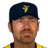
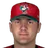

Franchise record book · MLB
Colorado Rockies
Seasons covered: 1993–2002. Only games played for this franchise count.
Read this first: seasons 1871–2001 are real MLB history that shipped with the OOTP file, mapped by OOTP onto this universe's 30 original franchises (club names as they were that season). 2002 is this universe, season to date (top tiers: MLB, ABL, FBL). Player names are as the export stores them; OOTP gives some historical players generated names.
Home runs
| # | Player | Season | Team | Home runs |
|---|---|---|---|---|
| #1 | 2001 |  Colorado Rockies Colorado Rockies | 49 | |
| #2 | 1997 | Colorado Rockies | 49 | |
| #3 | 1996 | Colorado Rockies | 47 | |
| #4 | 1998 | Colorado Rockies | 46 | |
| #5 | 2000 | Colorado Rockies | 42 | |
| #6 | 1997 | Colorado Rockies | 41 | |
| #7 | 1996 | Colorado Rockies | 40 | |
| #8 | 1997 | Colorado Rockies | 40 | |
| #9 | 1996 | Colorado Rockies | 40 | |
| #10 | 1995 | Colorado Rockies | 40 |
Hits
| # | Player | Season | Team | Hits |
|---|---|---|---|---|
| #1 | 1998 | Colorado Rockies | 219 | |
| #2 | 2000 | Colorado Rockies | 216 | |
| #3 | 1996 | Colorado Rockies | 211 | |
| #4 | 1997 | Colorado Rockies | 208 | |
| #5 | 1998 | Colorado Rockies | 206 | |
| #6 | 2001 | Colorado Rockies | 202 | |
| #7 | 1996 | Colorado Rockies | 198 | |
| #8 | 2001 | Colorado Rockies | 197 | |
| #9 | 1995 | Colorado Rockies | 197 | |
| #10 | 2000 | Colorado Rockies | 195 |
RBI
| # | Player | Season | Team | RBI |
|---|---|---|---|---|
| #1 | 1996 | Colorado Rockies | 150 | |
| #2 | 2000 | Colorado Rockies | 147 | |
| #3 | 2001 | Colorado Rockies | 146 | |
| #4 | 1998 | Colorado Rockies | 144 | |
| #5 | 1996 | Colorado Rockies | 141 | |
| #6 | 1997 | Colorado Rockies | 140 | |
| #7 | 1999 | Colorado Rockies | 133 | |
| #8 | 1997 | Colorado Rockies | 130 | |
| #9 | 1996 | Colorado Rockies | 128 | |
| #10 | 1995 | Colorado Rockies | 128 |
Runs
| # | Player | Season | Team | Runs |
|---|---|---|---|---|
| #1 | 1997 | Colorado Rockies | 143 | |
| #2 | 1996 | Colorado Rockies | 142 | |
| #3 | 2000 | Colorado Rockies | 138 | |
| #4 | 2001 | Colorado Rockies | 132 | |
| #5 | 1997 | Colorado Rockies | 120 | |
| #6 | 1996 | Colorado Rockies | 119 | |
| #7 | 1999 | Colorado Rockies | 114 | |
| #8 | 1996 | Colorado Rockies | 114 | |
| #9 | 1996 | Colorado Rockies | 113 | |
| #10 | 1998 | Colorado Rockies | 113 |
Stolen bases
| # | Player | Season | Team | Stolen bases |
|---|---|---|---|---|
| #1 | 1996 | Colorado Rockies | 53 | |
| #2 | 2001 | Colorado Rockies | 46 | |
| #3 | 1993 | Colorado Rockies | 42 | |
| #4 | 2000 | Colorado Rockies | 39 | |
| #5 | 1995 | Colorado Rockies | 35 | |
| #6 | 1997 | Colorado Rockies | 33 | |
| #7 | 1996 | Colorado Rockies | 32 | |
| #8 | 1997 | Colorado Rockies | 32 | |
| #9 | 1996 | Colorado Rockies | 31 | |
| #10 | 1993 | Colorado Rockies | 30 |
Doubles
Triples
| # | Player | Season | Team | Triples |
|---|---|---|---|---|
| #1 | 2001 | Colorado Rockies | 11 | |
| #2 | 2001 | Colorado Rockies | 11 | |
| #3 | 1999 | Colorado Rockies | 11 | |
| #4 | 2000 | Colorado Rockies | 11 | |
| #5 | 1997 | Colorado Rockies | 10 | |
| #6 | 1998 | Colorado Rockies | 9 | |
| #7 | 1995 | Colorado Rockies | 9 | |
| #8 | 1996 | Colorado Rockies | 8 | |
| #9 | 2001 | Colorado Rockies | 8 | |
| #10 | 1993 | Colorado Rockies | 8 |
Walks
| # | Player | Season | Team | Walks |
|---|---|---|---|---|
| #1 | 2000 | Colorado Rockies | 103 | |
| #2 | 2001 | Colorado Rockies | 98 | |
| #3 | 1995 | Colorado Rockies | 98 | |
| #4 | 2001 | Colorado Rockies | 82 | |
| #5 | 1996 | Colorado Rockies | 80 | |
| #6 | 1997 | Colorado Rockies | 78 | |
| #7 | 1999 | Colorado Rockies | 68 | |
| #8 | 2000 | Colorado Rockies | 67 | |
| #9 | 1997 | Colorado Rockies | 66 | |
| #10 | 1998 | Colorado Rockies | 64 |
Total bases
| # | Player | Season | Team | Total bases |
|---|---|---|---|---|
| #1 | 1997 | Colorado Rockies | 409 | |
| #2 | 2000 | Colorado Rockies | 405 | |
| #3 | 2001 | Colorado Rockies | 402 | |
| #4 | 1996 | Colorado Rockies | 392 | |
| #5 | 1998 | Colorado Rockies | 380 | |
| #6 | 1996 | Colorado Rockies | 376 | |
| #7 | 1995 | Colorado Rockies | 359 | |
| #8 | 1997 | Colorado Rockies | 351 | |
| #9 | 1996 | Colorado Rockies | 345 | |
| #10 | 1999 | Colorado Rockies | 339 |
Batting average qualified
| # | Player | Season | Team | Batting average |
|---|---|---|---|---|
| #1 | 1999 | Colorado Rockies | .379 | |
| #2 | 2000 | Colorado Rockies | .372 | |
| #3 | 1993 | Colorado Rockies | .370 | |
| #4 | 1997 | Colorado Rockies | .366 | |
| #5 | 1998 | Colorado Rockies | .363 | |
| #6 | 2001 | Colorado Rockies | .350 | |
| #7 | 1996 | Colorado Rockies | .344 | |
| #8 | 1995 | Colorado Rockies | .340 | |
| #9 | 2001 | Colorado Rockies | .336 | |
| #10 | 2000 | Colorado Rockies | .335 |
On-base % qualified
| # | Player | Season | Team | On-base % |
|---|---|---|---|---|
| #1 | 2000 | Colorado Rockies | .463 | |
| #2 | 1999 | Colorado Rockies | .458 | |
| #3 | 1997 | Colorado Rockies | .452 | |
| #4 | 2001 | Colorado Rockies | .449 | |
| #5 | 1998 | Colorado Rockies | .445 | |
| #6 | 2001 | Colorado Rockies | .432 | |
| #7 | 1996 | Colorado Rockies | .408 | |
| #8 | 1993 | Colorado Rockies | .403 | |
| #9 | 1995 | Colorado Rockies | .403 | |
| #10 | 2000 | Colorado Rockies | .395 |
Slugging % qualified
| # | Player | Season | Team | Slugging % |
|---|---|---|---|---|
| #1 | 1997 | Colorado Rockies | .720 | |
| #2 | 1999 | Colorado Rockies | .710 | |
| #3 | 2000 | Colorado Rockies | .698 | |
| #4 | 2001 | Colorado Rockies | .685 | |
| #5 | 2001 | Colorado Rockies | .662 | |
| #6 | 1996 | Colorado Rockies | .639 | |
| #7 | 1998 | Colorado Rockies | .630 | |
| #8 | 1995 | Colorado Rockies | .620 | |
| #9 | 1995 | Colorado Rockies | .607 | |
| #10 | 1993 | Colorado Rockies | .602 |
OPS qualified
| # | Player | Season | Team | OPS |
|---|---|---|---|---|
| #1 | 1997 | Colorado Rockies | 1.172 | |
| #2 | 1999 | Colorado Rockies | 1.168 | |
| #3 | 2000 | Colorado Rockies | 1.162 | |
| #4 | 2001 | Colorado Rockies | 1.116 | |
| #5 | 2001 | Colorado Rockies | 1.111 | |
| #6 | 1998 | Colorado Rockies | 1.075 | |
| #7 | 1996 | Colorado Rockies | 1.047 | |
| #8 | 1993 | Colorado Rockies | 1.005 | |
| #9 | 1995 | Colorado Rockies | .988 | |
| #10 | 1995 | Colorado Rockies | .984 |
WAR (OOTP)
| # | Player | Season | Team | WAR (OOTP) |
|---|---|---|---|---|
| #1 | 1997 | Colorado Rockies | 10.8 | |
| #2 | 2001 | Colorado Rockies | 9.0 | |
| #3 | 2000 | Colorado Rockies | 9.0 | |
| #4 | 1996 | Colorado Rockies | 8.9 | |
| #5 | 2001 | Colorado Rockies | 8.6 | |
| #6 | 1998 | Colorado Rockies | 7.6 | |
| #7 | 1999 | Colorado Rockies | 7.5 | |
| #8 | 1997 | Colorado Rockies | 6.9 | |
| #9 | 1996 | Colorado Rockies | 6.3 | |
| #10 | 1998 | Colorado Rockies | 6.1 |
Wins
Strikeouts
| # | Player | Season | Team | Strikeouts |
|---|---|---|---|---|
| #1 | 1999 | Colorado Rockies | 210 | |
| #2 | 2000 | Colorado Rockies | 193 | |
| #3 | 1998 | Colorado Rockies | 170 | |
| #4 | 1998 | Colorado Rockies | 158 | |
| #5 | 2001 | Colorado Rockies | 139 | |
| #6 | 2001 | Colorado Rockies | 134 | |
| #7 | 1993 | Colorado Rockies | 126 | |
| #8 | 2001 | Colorado Rockies | 125 | |
| #9 | 2001 | Colorado Rockies | 122 | |
| #10 | Brian Bohanon • | 1999 | Colorado Rockies | 120 |
Saves
Innings
| # | Player | Season | Team | Innings |
|---|---|---|---|---|
| #1 | 1999 | Colorado Rockies | 232.0 | |
| #2 | 1998 | Colorado Rockies | 230.1 | |
| #3 | 1996 | Colorado Rockies | 213.0 | |
| #4 | 1998 | Colorado Rockies | 209.1 | |
| #5 | 1998 | Colorado Rockies | 206.1 | |
| #6 | 2001 | Colorado Rockies | 203.0 | |
| #7 | Brian Bohanon • | 1999 | Colorado Rockies | 197.1 |
| #8 | 2000 | Colorado Rockies | 196.1 | |
| #9 | 1997 | Colorado Rockies | 191.0 | |
| #10 | 1999 | Colorado Rockies | 190.2 |
Complete games
Shutouts
ERA qualified
| # | Player | Season | Team | ERA |
|---|---|---|---|---|
| #1 | 2002 (MLB) | Colorado Rockies | 3.63 | |
| #2 | Brian Moehler • | 2002 (MLB) | Colorado Rockies | 3.74 |
| #3 | Armando Reynoso • | 1993 | Colorado Rockies | 4.00 |
| #4 | 1995 | Colorado Rockies | 4.21 | |
| #5 | 1997 | Colorado Rockies | 4.29 | |
| #6 | Paul Rigdon • | 2002 (MLB) | Colorado Rockies | 4.62 |
| #7 | Brian Bohanon • | 2000 | Colorado Rockies | 4.68 |
| #8 | 1997 | Colorado Rockies | 4.71 | |
| #9 | 1994 | Colorado Rockies | 4.80 | |
| #10 | Armando Reynoso • | 1996 | Colorado Rockies | 4.96 |
WHIP qualified
| # | Player | Season | Team | WHIP |
|---|---|---|---|---|
| #1 | 2002 (MLB) | Colorado Rockies | 1.33 | |
| #2 | 1995 | Colorado Rockies | 1.36 | |
| #3 | Chris Bootcheck • | 2002 (MLB) | Colorado Rockies | 1.39 |
| #4 | Armando Reynoso • | 1993 | Colorado Rockies | 1.42 |
| #5 | 1999 | Colorado Rockies | 1.44 | |
| #6 | Brian Moehler • | 2002 (MLB) | Colorado Rockies | 1.45 |
| #7 | Armando Reynoso • | 1996 | Colorado Rockies | 1.45 |
| #8 | 1997 | Colorado Rockies | 1.47 | |
| #9 | 1997 | Colorado Rockies | 1.47 | |
| #10 | Brian Bohanon • | 2000 | Colorado Rockies | 1.47 |
K/9 qualified
| # | Player | Season | Team | K/9 |
|---|---|---|---|---|
| #1 | 2000 | Colorado Rockies | 8.8 | |
| #2 | 1999 | Colorado Rockies | 8.1 | |
| #3 | 2002 (MLB) | Colorado Rockies | 7.4 | |
| #4 | 2001 | Colorado Rockies | 7.3 | |
| #5 | 1998 | Colorado Rockies | 7.3 | |
| #6 | 1995 | Colorado Rockies | 6.2 | |
| #7 | 1998 | Colorado Rockies | 6.2 | |
| #8 | 1997 | Colorado Rockies | 5.7 | |
| #9 | 1994 | Colorado Rockies | 5.7 | |
| #10 | Armando Reynoso • | 1993 | Colorado Rockies | 5.6 |
WAR (OOTP)
| # | Player | Season | Team | WAR (OOTP) |
|---|---|---|---|---|
| #1 | 1999 | Colorado Rockies | 3.2 | |
| #2 | 2000 | Colorado Rockies | 2.6 | |
| #3 | 1997 | Colorado Rockies | 2.4 | |
| #4 |  Gabe White • | 2000 | Colorado Rockies | 2.3 |
| #5 | 1995 | Colorado Rockies | 2.3 | |
| #6 | 1993 | Colorado Rockies | 2.1 | |
| #7 | 1994 | Colorado Rockies | 2.1 | |
| #8 | 1995 | Colorado Rockies | 1.9 | |
| #9 | 1998 | Colorado Rockies | 1.9 | |
| #10 | Armando Reynoso • | 1993 | Colorado Rockies | 1.8 |
Home runs
| # | Player | Years | Home runs |
|---|---|---|---|
| #1 | 1989–02 | 210 | |
| #2 | 1991–02 | 203 | |
| #3 | 1988–01 | 201 | |
| #4 | 1985–02 | 172 | |
| #5 | 1997–02 | 156 | |
| #6 | 1987–02 | 115 | |
| #7 | 1996–02 | 43 | |
| #8 | 1984–00 | 36 | |
| #9 | 1988–01 | 35 | |
| #10 | 1992–02 | 30 |
Hits
| # | Player | Years | Hits |
|---|---|---|---|
| #1 | 1988–01 | 1278 | |
| #2 | 1991–02 | 1044 | |
| #3 | 1989–02 | 1036 | |
| #4 | 1985–02 | 843 | |
| #5 | 1997–02 | 791 | |
| #6 | 1996–02 | 769 | |
| #7 | 1992–02 | 626 | |
| #8 | 1987–02 | 558 | |
| #9 | 1987–00 | 469 | |
| #10 | 1994–02 | 360 |
RBI
| # | Player | Years | RBI |
|---|---|---|---|
| #1 | 1988–01 | 826 | |
| #2 | 1989–02 | 645 | |
| #3 | 1991–02 | 610 | |
| #4 | 1985–02 | 579 | |
| #5 | 1997–02 | 514 | |
| #6 | 1987–02 | 337 | |
| #7 | 1996–02 | 281 | |
| #8 | 1992–02 | 227 | |
| #9 | 1994–02 | 198 | |
| #10 | 1988–01 | 148 |
Runs
| # | Player | Years | Runs |
|---|---|---|---|
| #1 | 1989–02 | 689 | |
| #2 | 1988–01 | 665 | |
| #3 | 1991–02 | 516 | |
| #4 | 1985–02 | 476 | |
| #5 | 1997–02 | 475 | |
| #6 | 1996–02 | 395 | |
| #7 | 1992–02 | 378 | |
| #8 | 1987–02 | 361 | |
| #9 | 1987–00 | 264 | |
| #10 | 1994–02 | 183 |
Stolen bases
| # | Player | Years | Stolen bases |
|---|---|---|---|
| #1 | 1992–02 | 180 | |
| #2 | 1989–02 | 111 | |
| #3 | 1988–01 | 105 | |
| #4 | 1985–02 | 55 | |
| #5 | 2000–02 | 53 | |
| #6 | 1987–02 | 52 | |
| #7 | 1995–02 | 45 | |
| #8 | 1987–00 | 42 | |
| #9 | 1991–02 | 39 | |
| #10 | 1990–02 | 36 |
Doubles
| # | Player | Years | Doubles |
|---|---|---|---|
| #1 | 1988–01 | 270 | |
| #2 | 1989–02 | 223 | |
| #3 | 1997–02 | 191 | |
| #4 | 1991–02 | 165 | |
| #5 | 1985–02 | 155 | |
| #6 | 1996–02 | 125 | |
| #7 | 1987–02 | 104 | |
| #8 | 1992–02 | 102 | |
| #9 | 1994–02 | 79 | |
| #10 | 1987–00 | 71 |
Triples
| # | Player | Years | Triples |
|---|---|---|---|
| #1 | 1996–02 | 49 | |
| #2 | 1989–02 | 30 | |
| #3 | 1992–02 | 28 | |
| #4 | 1987–02 | 24 | |
| #5 | 1988–01 | 18 | |
| #6 | 1991–02 | 17 | |
| #7 | 1990–02 | 15 | |
| #8 | 1987–00 | 14 | |
| #9 | 1985–02 | 13 | |
| #10 | 1986–96 | 12 |
Walks
| # | Player | Years | Walks |
|---|---|---|---|
| #1 | 1989–02 | 396 | |
| #2 | 1997–02 | 330 | |
| #3 | 1987–00 | 300 | |
| #4 | 1992–02 | 254 | |
| #5 | 1988–01 | 226 | |
| #6 | 1991–02 | 222 | |
| #7 | 1987–02 | 202 | |
| #8 | 1985–02 | 169 | |
| #9 | 1996–02 | 133 | |
| #10 | 1984–00 | 132 |
Total bases
| # | Player | Years | Total bases |
|---|---|---|---|
| #1 | 1988–01 | 2187 | |
| #2 | 1989–02 | 1949 | |
| #3 | 1991–02 | 1852 | |
| #4 | 1985–02 | 1540 | |
| #5 | 1997–02 | 1472 | |
| #6 | 1996–02 | 1121 | |
| #7 | 1987–02 | 1055 | |
| #8 | 1992–02 | 874 | |
| #9 | 1987–00 | 610 | |
| #10 | 1994–02 | 535 |
Batting average min 2,000 PA
| # | Player | Years | Batting average |
|---|---|---|---|
| #1 | 1989–02 | .341 | |
| #2 | 1997–02 | .334 | |
| #3 | 1985–02 | .316 | |
| #4 | 1988–01 | .316 | |
| #5 | 1987–02 | .306 | |
| #6 | 1991–02 | .299 | |
| #7 | 1992–02 | .295 | |
| #8 | 1996–02 | .282 | |
| #9 | 1987–00 | .266 |
On-base % min 2,000 PA
| # | Player | Years | On-base % |
|---|---|---|---|
| #1 | 1989–02 | .426 | |
| #2 | 1997–02 | .416 | |
| #3 | 1987–02 | .378 | |
| #4 | 1992–02 | .378 | |
| #5 | 1987–00 | .375 | |
| #6 | 1985–02 | .367 | |
| #7 | 1988–01 | .352 | |
| #8 | 1991–02 | .342 | |
| #9 | 1996–02 | .313 |
Slugging % min 2,000 PA
| # | Player | Years | Slugging % |
|---|---|---|---|
| #1 | 1989–02 | .642 | |
| #2 | 1997–02 | .622 | |
| #3 | 1987–02 | .579 | |
| #4 | 1985–02 | .577 | |
| #5 | 1988–01 | .540 | |
| #6 | 1991–02 | .530 | |
| #7 | 1992–02 | .412 | |
| #8 | 1996–02 | .411 | |
| #9 | 1987–00 | .347 |
OPS min 2,000 PA
| # | Player | Years | OPS |
|---|---|---|---|
| #1 | 1989–02 | 1.068 | |
| #2 | 1997–02 | 1.038 | |
| #3 | 1987–02 | .957 | |
| #4 | 1985–02 | .944 | |
| #5 | 1988–01 | .892 | |
| #6 | 1991–02 | .872 | |
| #7 | 1992–02 | .790 | |
| #8 | 1996–02 | .724 | |
| #9 | 1987–00 | .722 |
WAR (OOTP)
| # | Player | Years | WAR (OOTP) |
|---|---|---|---|
| #1 | 1989–02 | 45.5 | |
| #2 | 1988–01 | 31.0 | |
| #3 | 1997–02 | 28.9 | |
| #4 | 1985–02 | 25.6 | |
| #5 | 1991–02 | 23.6 | |
| #6 | 1987–02 | 20.0 | |
| #7 | 1992–02 | 14.3 | |
| #8 | 1987–00 | 8.8 | |
| #9 | 1994–02 | 7.9 | |
| #10 | 1984–00 | 7.1 |
Wins
| # | Player | Years | Wins |
|---|---|---|---|
| #1 | 1992–02 | 53 | |
| #2 | 1989–98 | 39 | |
| #3 | 1993–02 | 31 | |
| #4 | Armando Reynoso • | 1991–02 | 30 |
| #5 | Brian Bohanon • | 1990–01 | 29 |
| #6 | 1996–02 | 25 | |
| #7 | 1992–02 | 25 | |
| #8 | 1990–02 | 23 | |
| #9 | 1991–02 | 21 | |
| #10 | 1986–96 | 20 |
Strikeouts
| # | Player | Years | Strikeouts |
|---|---|---|---|
| #1 | 1992–02 | 749 | |
| #2 | 1993–02 | 415 | |
| #3 | 1989–98 | 337 | |
| #4 | 1986–97 | 319 | |
| #5 | 1997–02 | 314 | |
| #6 | 1990–02 | 297 | |
| #7 | 1992–02 | 275 | |
| #8 | 1991–02 | 274 | |
| #9 | Armando Reynoso • | 1991–02 | 270 |
| #10 | Brian Bohanon • | 1990–01 | 265 |
Saves
| # | Player | Years | Saves |
|---|---|---|---|
| #1 | 1986–97 | 60 | |
| #2 | 1990–02 | 46 | |
| #3 | 1998–02 | 41 | |
| #4 | Dave Veres • | 1994–02 | 39 |
| #5 | 1993–00 | 36 | |
| #6 | 1993–02 | 20 | |
| #7 | 1992–02 | 15 | |
| #8 | 1989–00 | 8 | |
| #9 | 1995–02 | 7 | |
| #10 | Gabe White • | 1994–02 | 5 |
Innings
| # | Player | Years | Innings |
|---|---|---|---|
| #1 | 1992–02 | 827.1 | |
| #2 | 1989–98 | 576.1 | |
| #3 | 1996–02 | 541.2 | |
| #4 | Armando Reynoso • | 1991–02 | 503.0 |
| #5 | 1997–02 | 483.2 | |
| #6 | Brian Bohanon • | 1990–01 | 471.1 |
| #7 | 1993–02 | 470.0 | |
| #8 | 1991–02 | 421.0 | |
| #9 | 1992–02 | 369.2 | |
| #10 | 1995–97 | 356.0 |
Complete games
| # | Player | Years | Complete games |
|---|---|---|---|
| #1 | 1992–02 | 14 | |
| #2 | 1997–02 | 6 | |
| #3 | Brian Bohanon • | 1990–01 | 5 |
| #4 | 1991–02 | 5 | |
| #5 | 1995–97 | 5 | |
| #6 | Armando Reynoso • | 1991–02 | 5 |
| #7 | 1992–96 | 3 | |
| #8 | 1989–98 | 3 | |
| #9 | Mark Thompson • | 1994–00 | 3 |
| #10 | 1996–02 | 2 |
Shutouts
| # | Player | Years | Shutouts |
|---|---|---|---|
| #1 | Brian Bohanon • | 1990–01 | 2 |
| #2 | 1997–02 | 2 | |
| #3 | 1995–97 | 2 | |
| #4 | 1998–00 | 1 | |
| #5 | 1992–02 | 1 | |
| #6 | 1991–02 | 1 | |
| #7 | 1992–96 | 1 | |
| #8 | Mark Thompson • | 1994–00 | 1 |
| #9 | 1993–02 | 1 | |
| #10 |  Jason Jennings • | 2001–02 | 1 |
ERA min 500 IP
| # | Player | Years | ERA |
|---|---|---|---|
| #1 | Armando Reynoso • | 1991–02 | 4.65 |
| #2 | 1989–98 | 5.20 | |
| #3 | 1992–02 | 5.43 | |
| #4 | 1996–02 | 5.57 |
WHIP min 500 IP
| # | Player | Years | WHIP |
|---|---|---|---|
| #1 | 1992–02 | 1.46 | |
| #2 | Armando Reynoso • | 1991–02 | 1.47 |
| #3 | 1989–98 | 1.57 | |
| #4 | 1996–02 | 1.68 |
K/9 min 500 IP
| # | Player | Years | K/9 |
|---|---|---|---|
| #1 | 1992–02 | 8.1 | |
| #2 | 1989–98 | 5.3 | |
| #3 | Armando Reynoso • | 1991–02 | 4.8 |
| #4 | 1996–02 | 4.0 |
WAR (OOTP)
| # | Player | Years | WAR (OOTP) |
|---|---|---|---|
| #1 | 1992–02 | 8.1 | |
| #2 | 1997–02 | 4.9 | |
| #3 | 1986–97 | 4.0 | |
| #4 | 1989–98 | 3.8 | |
| #5 | 1990–02 | 2.7 | |
| #6 | Armando Reynoso • | 1991–02 | 2.3 |
| #7 | 1993–02 | 2.2 | |
| #8 | 1993–00 | 1.9 | |
| #9 | 1986–96 | 1.6 | |
| #10 | 1991–02 | 1.6 |
The franchise's best real-history seasons by winning percentage.